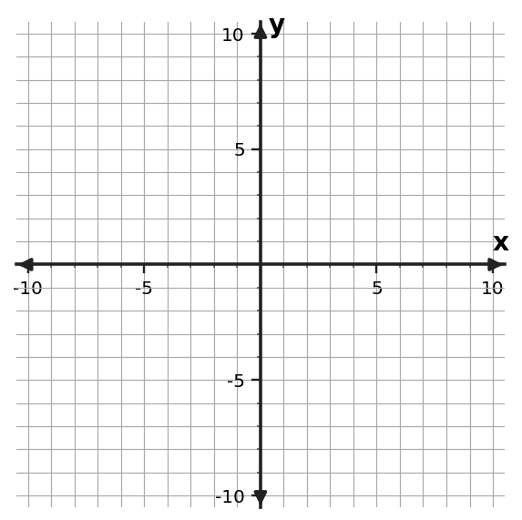

Algebra 1 Quick Check
Graphing Linear Functions
Section 2.2
Name:
Date:
Evidence Focus
- I can build graphs of linear functions using slope and intercept information.
- I can use key features of a line to interpret a relationship.
- I can extend a graph to predict outputs within a meaningful range.
Work independently. Show enough mathematical evidence for your thinking to be judged.
1
Graph y=-2x+4 using the intercept and repeated slope moves. Mark at least three points.

2
For y=3x-5, state the y-intercept and slope and explain how each appears on the graph.
3
Use y=0.5x+2 to predict y when x=14 and state whether extending to x=100 would always be meaningful in a real context.